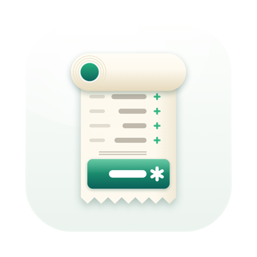

Tallette
계산을 기록하는 종이 테이프.
기능
Tallette는 종이 테이프가 달린 가산기입니다. 테이프를 따라 금액을 입력하고, 줄마다 메모를 달고, 언제든 어느 줄이든 바꿀 수 있습니다. 그 아래의 모든 합계가 따라옵니다. Mac, iPhone 및 iPad에서는 한 번 구입으로 세 기기 모두에서 쓸 수 있고, Android 휴대폰과 태블릿에서는 Google Play를 통해 사용할 수 있습니다.
- 말하듯 입력하기.
12.50+는 더하기,−7.20 lunch는 메모와 함께 빼기,3×4=는 곱하기,+19% tax는 세금 더하기,15%는 백분율 계산입니다. - 가산기처럼 소계, 합계, 총계를 내고, 작업의 각 부분마다 새 섹션을 만들 수 있습니다.
- 정확함. 이진 부동소수점이 아닌 십진 연산이라 0.10 + 0.20은 정확히 0.30입니다. 유효 숫자 34자리, 반올림. 0으로 나누면 오류 줄이 표시됩니다.
- 세금, 백분율, 통화. 부가세를 더하거나 빼고, 할증과 할인을 적용하며, 합계 옆에 통화를 표시합니다(표시만 할 뿐, 환산하지 않습니다).
- 태그. 메모에
#food를 넣으면 줄을 범주별로 합산합니다. - 내보내기와 프린트. 정렬된 텍스트, 스프레드시트용 CSV, PDF, 그리고 Mac에서 프린트. Tallette CSV를 가져오거나 숫자 열을 붙여 넣을 수도 있습니다.
macOS 14 Sonoma 이상이 필요합니다. iPhone 및 iPad에서는 iOS 및 iPadOS 17 이상, Android에서는 Android 8.0 이상.
한 문단으로 보는 개인정보 보호
Tallette는 인터넷에 연결하지 않습니다. 테이프는 저장한 파일로 기기에 남습니다. 계정, 추적, 분석이 없으며 어떤 데이터도 수집하지 않습니다. 전체 개인정보 처리방침에도 같은 내용이 더 자세히 나와 있습니다.
같은 개발자의 다른 앱
한 가지 일을 제대로 하도록 만든 작은 앱들입니다. 계정도 광고도 없고, 어떤 앱도 사용자를 추적하지 않습니다.
 Statuette메뉴 막대에서 보는 CPU, 메모리, 디스크, 네트워크.Mac
Statuette메뉴 막대에서 보는 CPU, 메모리, 디스크, 네트워크.Mac Tockette메뉴 막대에서 한 번 끌면 시작되는 타이머.Mac
Tockette메뉴 막대에서 한 번 끌면 시작되는 타이머.Mac Zonette필요한 모든 시간대를 클릭 한 번으로.MaciPhone 및 iPadAndroid
Zonette필요한 모든 시간대를 클릭 한 번으로.MaciPhone 및 iPadAndroid- Lunette달과 해를 한눈에.MaciPhone 및 iPadAndroid
 Lunarette네 가지 전통의 음력 달력.MaciPhone 및 iPadAndroid
Lunarette네 가지 전통의 음력 달력.MaciPhone 및 iPadAndroid Pausette눈과 허리를 위한 부드러운 휴식.Mac
Pausette눈과 허리를 위한 부드러운 휴식.Mac Poisette착용한 AirPods가 바른 자세를 알려 줍니다.MaciPhone 및 iPad
Poisette착용한 AirPods가 바른 자세를 알려 줍니다.MaciPhone 및 iPad Hushette반복되지 않는 차분한 주변 소리.MaciPhone 및 iPadAndroid
Hushette반복되지 않는 차분한 주변 소리.MaciPhone 및 iPadAndroid Tapsody타이핑할 때 들리는 기계식 키보드 소리.Mac
Tapsody타이핑할 때 들리는 기계식 키보드 소리.Mac Thrumline메뉴 막대에서 실시간으로 보는 심박수.Mac
Thrumline메뉴 막대에서 실시간으로 보는 심박수.Mac NightjarMac을 깨어 있게. 정직하게.Mac
NightjarMac을 깨어 있게. 정직하게.Mac Umbrette작업 중인 창만 빼고 모두 어둡게.Mac
Umbrette작업 중인 창만 빼고 모두 어둡게.Mac Prompette카메라 바로 아래의 프롬프터.MaciPhone 및 iPadAndroid
Prompette카메라 바로 아래의 프롬프터.MaciPhone 및 iPadAndroid Probette미디어 파일의 모든 기술 정보를 쉬운 말로.MaciPhone 및 iPadAndroid
Probette미디어 파일의 모든 기술 정보를 쉬운 말로.MaciPhone 및 iPadAndroid Bindette오디오 파일을 제대로 된 오디오북 한 권으로.MaciPhone 및 iPadAndroid
Bindette오디오 파일을 제대로 된 오디오북 한 권으로.MaciPhone 및 iPadAndroid Lettrettewinmail.dat 및 .msg 파일을 보낸 그대로 엽니다.MaciPhone 및 iPad
Lettrettewinmail.dat 및 .msg 파일을 보낸 그대로 엽니다.MaciPhone 및 iPad Nhanh Tay네 개의 답을 순서대로. 빠르게.MaciPhone 및 iPadAndroid
Nhanh Tay네 개의 답을 순서대로. 빠르게.MaciPhone 및 iPadAndroid Pinette늘 눈앞에 두는 메모.MaciPhone 및 iPadAndroid
Pinette늘 눈앞에 두는 메모.MaciPhone 및 iPadAndroid
Usagette메뉴 막대에서 보는 Claude 사용 한도.Mac Squiggo다정한 친구와 함께 그려요.MaciPhone 및 iPadAndroid
Squiggo다정한 친구와 함께 그려요.MaciPhone 및 iPadAndroid Foreman현장 일을 위한 작업, 견적, 청구서.iPhone 및 iPad
Foreman현장 일을 위한 작업, 견적, 청구서.iPhone 및 iPad Tilewake그림이 깨어나는 슬라이딩 퍼즐.MaciPhone 및 iPadAndroid
Tilewake그림이 깨어나는 슬라이딩 퍼즐.MaciPhone 및 iPadAndroid